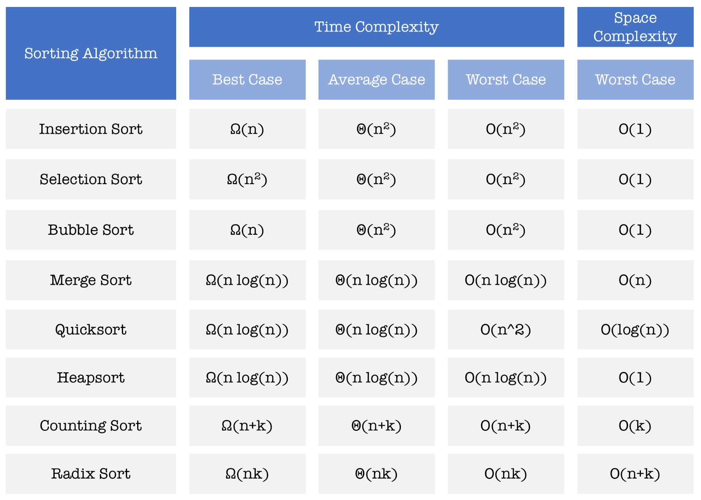
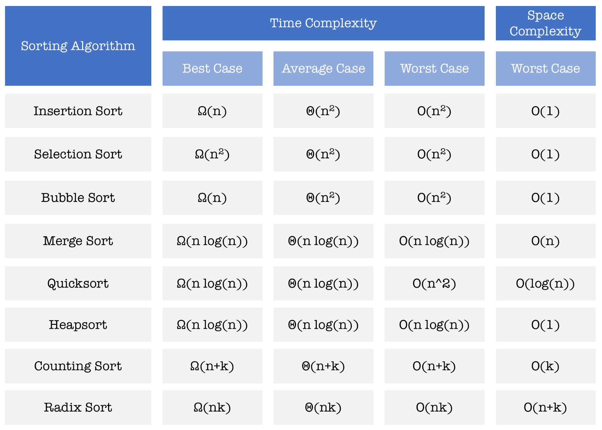

.
Video of Bubble Sort algorithm
Sorting Complexity
Video of Bubble Sort algorithm
Time Efficiency
Time efficiency essentially refers to how fast it take for a sorting algorithm to reach the end result of a sorting algorithm; a sorted array. Generally time efficiency is measured using big-O notation, meaning that if a algorithm runs at O(n) then the algorithm will never be slower than n.
Space Efficiency
This term refers to how much additional space is needed in order to resolve the given sorting algorithm. If a sorting algorithm has an efficiency of O(1) then it requires no additional space.